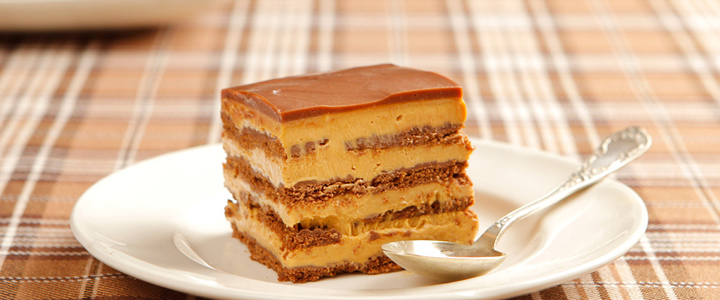

CHOCOTORTA
Por Chef Bagley

Dificultad: fácil
Duración: 30 minutos
Comensales: 4
Costo: $50
DESCRIPCIÓN
Galletitas, queso crema y pocos ingredientes más alcanzan para lograr una preparación simple y exitosa. Te contamos, paso a paso, cómo hacer la chocotorta.
INGREDIENTES
- 2 paquetes de Chocolinas
- 500 gr. de dulce de leche
- 600 gr. de queso crema
- 60 gr. de chocolate para decorar
PREPARACIÓN
- En un bowl mezclar enérgicamente el queso crema y el dulce de leche. Reservar.
- En un plato hondo verter la leche chocolatada y sumergir la primer capa de galletitas las cuales colocaremos dentro de la fuente con el relieve o dibujo boca abajo.
- Sobre ellas volcar abundante crema de dulce de leche y volver a cubrir con otra capa de galletitas
- Repetir esta acción una vez más terminar el postre con una última capa de galletitas. Cerrar sobre éstas el excedente de papel manteca y colocar en el freezer por lo menos por 8 horas. Invertir el postre helado quedará con el relieve hacia arriba.
- Cubrir con una generosa capa de chocolate rallado, cortar y servir.